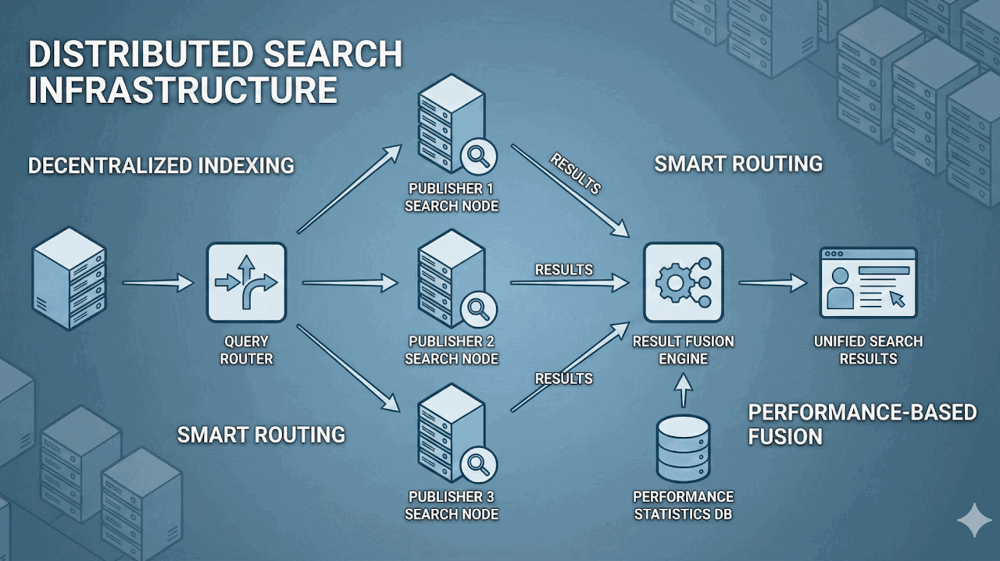

SearchNG: Distributed Search Hub
I founded a startup based on the idea of creating a distributed search infrastructure powered by a market-based rating mechanism. The venture received funding from the Jerusalem Software Incubator and the Israel Innovation Authority (formerly the Office of the Chief Scientist).